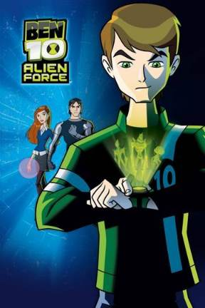
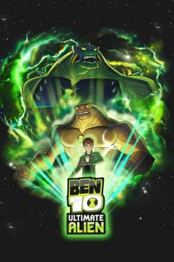
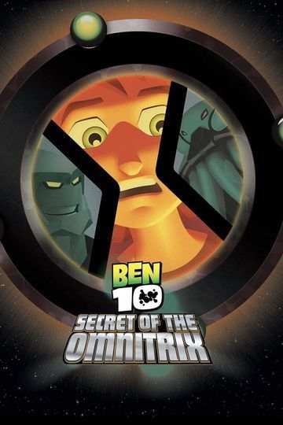

Ben Tennyson, who discovers a mysterious watch called Omnitrix, granting him the ability to transform into various alien heroes to fight evil.

This series follows Ben Tennyson, now a teenager, as he battles new villains and protects the universe with alien powers.

This series follows Ben Tennyson as he battles new villains with upgraded Omnitrix powers, protecting Earth and the universe.
Ben navigates parallel universes, encountering alternate versions of himself and new allies while fighting a variety of formidable enemies.

Ben battles the self-destruct mechanism of the Omnitrix while uncovering its secrets, its makes the situation grim.
A powerful enemy threatens Earth, forcing Ben and his alien forms to unite and battle against formidable foes.
An evil alien comes looking for a dangerous device, Ben Tennyson learns what it means to be a real hero.
Ben and his friends team up with a daughter of an alleged traitor, despite his grandfather's orders against it, in order to stop an alien force.